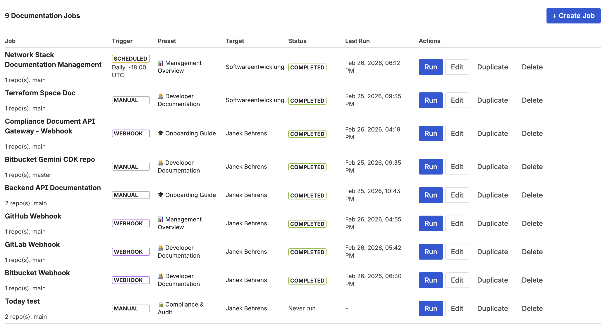

Why Jira projects go undocumented
In most engineering teams, Jira is where work lives — tickets, epics, sprints, history. Confluence is where documentation is supposed to live — architecture decisions, runbooks, API references, onboarding guides. The gap between the two is where knowledge goes to die.
Engineers close Jira tickets. Nobody updates the Confluence page. Three months later, a new team member reads the "current architecture" doc and works from assumptions that broke in sprint 14. Every team that uses both tools has experienced this.
The root cause isn't neglect — it's friction. Updating documentation is always optional in the moment when a ticket is closed. It requires opening a second tool, finding the right page, and writing context that feels repetitive when the Jira ticket already describes what changed. Automation removes that friction by triggering documentation events from the work events that are already happening.
Quick answer: Three layers of automation create self-maintaining Jira project documentation: (1) native Jira–Confluence linking for live issue embeds, (2) Jira Automation rules for sprint summaries and release notes, and (3) AI-powered code documentation tools for technical references that update on every code push.
The three documentation layers
Most teams need all three. Layer 1 takes 5 minutes to set up and solves "what's the current status?" Layer 2 takes 30 minutes and solves "what changed this sprint?" Layer 3 takes an hour to configure and solves "what does this codebase actually do?"
Layer 1 — Live issue macros in Confluence
The Jira Issues macro (built into Confluence Cloud) lets you embed a live issue table on any Confluence page. The table pulls from a JQL query and refreshes automatically — no editing the Confluence page when new tickets are added or statuses change.
A minimal project documentation page might contain:
- A Jira Issues macro filtered to
project = PROJ AND status != Done ORDER BY created DESC— shows active backlog at a glance - A second macro showing open bugs:
project = PROJ AND issuetype = Bug AND status != Done - A third macro for the current sprint:
project = PROJ AND sprint in openSprints()
The result: a Confluence page that's always current without anyone touching it. Engineers and stakeholders open the page and see the live state of the project — not a snapshot from two weeks ago.
Linking specific Jira issues to Confluence pages
For individual complex features, link the Jira issue directly to its specification page in Confluence. In Jira, open the issue and use the Confluence Pages section to link or create a page. The link appears on the issue (visible to anyone looking at the ticket) and in Confluence (showing which Jira issue this page relates to).
When an engineer opens a Jira ticket for a feature they're implementing, the linked spec is one click away. When a PM opens the Confluence spec, they can see the current issue status without switching tools.
Layer 2 — Automation-triggered sprint summaries
Jira Automation can create or update a Confluence page when a sprint completes. A simple rule looks like this:
- Trigger: Sprint completed
- Action: Create Confluence page in the project space with the sprint name as the title
- Content template: Completed issues (from smart values), started-but-not-finished issues, sprint dates
After initial setup, every sprint close automatically creates a documented sprint summary in Confluence — without anyone needing to remember to write it. After six months, you have a complete history of what shipped and when.
Common mistake: Trying to make automation-generated pages too rich. Start with a simple template: sprint name, dates, completed issue list, incomplete issue list. Resist the urge to add velocity charts or analysis until the basic automation is running reliably. A simple summary that exists is better than a perfect summary that never runs.
Layer 3 — AI-generated code documentation with CodeDoc AI
The hardest documentation problem for engineering teams isn't sprint summaries — it's technical documentation. Architecture diagrams, API references, data model descriptions, onboarding guides. These require writing skills, technical accuracy, and recency. They're also the most expensive to produce manually and the most likely to go stale.
CodeDoc AI for Confluence connects your GitHub or GitLab repository to Confluence and generates technical documentation automatically. On every push to a configured branch, the app reads the changed files, generates documentation using your configured presets, and updates the corresponding Confluence page.
The result: your "codebase overview" Confluence page regenerates every time the code changes. Engineers don't have to remember to update documentation — the documentation follows the code.

CodeDoc AI dashboard — documentation jobs connect your GitHub repository to Confluence pages, triggered automatically on each push
Setting up GitHub-to-Confluence documentation
-
1Install CodeDoc AI for Confluence from the Marketplace. It's a Forge app — no external servers, runs inside Atlassian infrastructure.
-
2Connect your GitHub or GitLab repository. Add a personal access token with read access to the repo. CodeDoc AI reads your repository files — it never writes to your repo.
-
3Configure a documentation job. Select which files to include (e.g.,
src/**/*.ts), choose a documentation preset (codebase overview, API reference, README), and select the target Confluence page where the output should be written. -
4Set the trigger. Run on-demand for the first generation, then enable the webhook trigger so the documentation regenerates automatically on every push to your main branch.
-
5Review and refine the output. Read the first generated page and check the preset configuration. Common adjustments: narrowing the file selection to exclude test files, adding a custom prompt to focus on a specific aspect of the codebase (e.g., "document the public API surface only").
For a full walkthrough with screenshots, see How to Auto-Generate Confluence Documentation from GitHub.

CodeDoc AI jobs — each job connects one or more repository paths to a Confluence page, with configurable trigger settings
Recommended Confluence structure for a Jira project
A well-organized project space in Confluence mirrors the natural structure of a Jira project. One space per team or product area, with sub-pages for:
- Project overview — live Jira Issues macro + key decisions and goals (human-written, rarely changes)
- Architecture & codebase — AI-generated by CodeDoc AI, updates automatically
- Sprint history — one sub-page per sprint, auto-created by Jira Automation on sprint close
- Decisions — Architecture Decision Records (ADRs), manually written, lightweight format
- Runbooks — operational guides, maintained by engineers, linked from relevant Jira issue types
The key insight is that layers 1–3 handle the pages that need to stay current automatically. Human-written pages (decisions, runbooks) can stay manual because they change rarely and require judgment that automation can't provide.
Keeping code documentation private: BYOK AI
For teams in regulated industries, sending source code to an AI provider is a significant privacy consideration. CodeDoc AI supports Bring Your Own Key (BYOK) — you configure your own OpenAI or Anthropic API key in the app settings, so your code is processed under your own organization's agreement with the AI provider, not a shared vendor key.
For a detailed breakdown of why this matters for enterprise and compliance teams, see BYOK AI for Atlassian: What It Means and Why It Matters.
Frequently asked questions
How do I automatically document a Jira project in Confluence?
Combine three layers: (1) Confluence's Jira Issues macro for live issue embeds in project pages; (2) Jira Automation rules that create sprint summary pages on sprint close; and (3) AI-powered code documentation with CodeDoc AI for Confluence to generate technical documentation from your GitHub or GitLab repository automatically on every push.
How do I link Jira issues to Confluence pages?
In Jira Cloud, open an issue and scroll to the Confluence Pages section. Click "Link Confluence Page" to attach an existing page, or create a new one. In Confluence, use the Jira Issues macro to embed a live table of issues filtered by project, sprint, or any JQL query — the table stays current without editing the page.
What is the best way to keep Confluence documentation up to date with Jira?
The most reliable approach removes humans from the update loop wherever possible. Live Jira macros update automatically. Sprint summary pages are created by automation. Code documentation is regenerated by CodeDoc AI on every code push. Human-written pages (decisions, runbooks) change slowly and can stay manual. The goal is that the pages most at risk of going stale — status, architecture, API references — never require a manual update.
Auto-generate Confluence docs from your code repository
CodeDoc AI for Confluence — AI-powered documentation from GitHub and GitLab, triggered on every push. Forge-native. Free trial included.
Try it free on Marketplace →